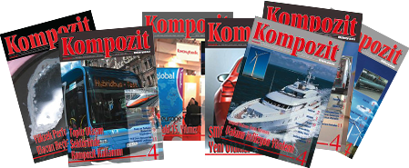

Sayı 51
Sayı 52
Sayı 53
Sayı 54
Sayı 55-56
Sayı 57-58
Sayı 59
Sayı 60-61
Sayı 39
Sayı 40
Sayı 41
Sayı 42
Sayı 43
Sayı 44
Sayı 45
Sayı 46
Sayı 47
Sayı 48
Sayı 49
Sayı 50
Sayı 31
Sayı 32
Sayı 33
Sayı 34
Sayı 35
Sayı 36
Sayı 37
Sayı 38
Sayı 23
Sayı 24
Sayı 25
Sayı 26
Sayı 27
Sayı 28
Sayı 29
Sayı 30
Sayı 16
Sayı 17
Sayı 18
Sayı 19
Sayı 20
Sayı 21
Sayı 22
Sayı 8
Sayı 9
Sayı 10
Sayı 11
Sayı 12
Sayı 13
Sayı 14
Sayı 15
Sayı 1
Sayı 2
Sayı 3
Sayı 4
Sayı 5
Sayı 6
Sayı 7
Geçmiş sayıları görmek için lütfen yukarıdan yıl seçiniz.
| Hakkımızda |
|---|
| Kompozit Dünyası, 2006 yılından beri Boytek A.Ş. tarafından çıkartılan, kompozit sektörünün sorunlarını ele alan ve bu alanda iletişim ihtiyacını karşılayan sektörel bilgi platformudur.Üç ayda bir çıkan bültenin işlediği konular arasında Türkiye ekonomisi ve sektör gündemi, sektörün öncü firmalarının tanıtımları, yeni teknolojiler ve malzemelere ilişkin teknik bilgiler, çevresel duyarlılığı arttıran makaleler ve iş sağlığı ve güvenliği ile ilgili eğitici yazılar yer almaktadır. 500’den fazla okuyucuya ücretsiz olarak dağıtımı yapılan Kompozit Dünyası’nın amacı, hammadde üreticisinden, kompozit ürün üreticisine kadar sektörün tüm aktörlerinin sesi olmaktır.  |
Dergimizi mailinize gönderebiliriz.
Aşağıdaki formu doldurun, adresinize dergimizi gönderelim.
Adres : 29 Ekim Cad.İstanbul Vizyon Park Ofis Plaza 3 A2 Blok No: 60-61 34197 Yenibosna
- Bahçelievler/İstanbul
Tel : +90 212 551 03 04 (2 hat)
Fax : +90 212 551 28 35
E-Posta :